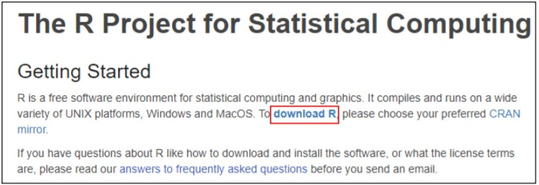

R Installion Guide
Dear Learners,
Below you may find the steps to download and install Anaconda in your PC.
Section 1: Download and Install R
-
Follow this link. Click the "download R" link in the middle of the page under "Getting Started."

2. Search for “0-Cloud-East Asia” and click the corresponding link

3. Click on the "Download R for Windows" link at the top of the page.

4. Click on the "install R for the first time" link at the top of the page.

5. Click "Download R for Windows" and save the executable file somewhere on your computer. Run the .exe file and follow the installation instructions.

6. During the installation, please change the Destination Location to the following path:

Section 2: Download and Install R Studio
-
Follow this link and click on the "Download" button

2. Scroll down and click on "Download RStudio Desktop” and save the executable file. Run the .exe file and follow the installation instructions. *
* Note: If you are prompted to enter admin username and password upon launching the
executable file, kindly contact Ong Zhong Fei from JPS (zhongfei@bnm.gov.my)
Section 3: Running R Studio
To launch R Studio, type “r studio” in your PC’s search box and click on “RStudio”

Last Updated: 8 September 2020
R Version: 4.0.2